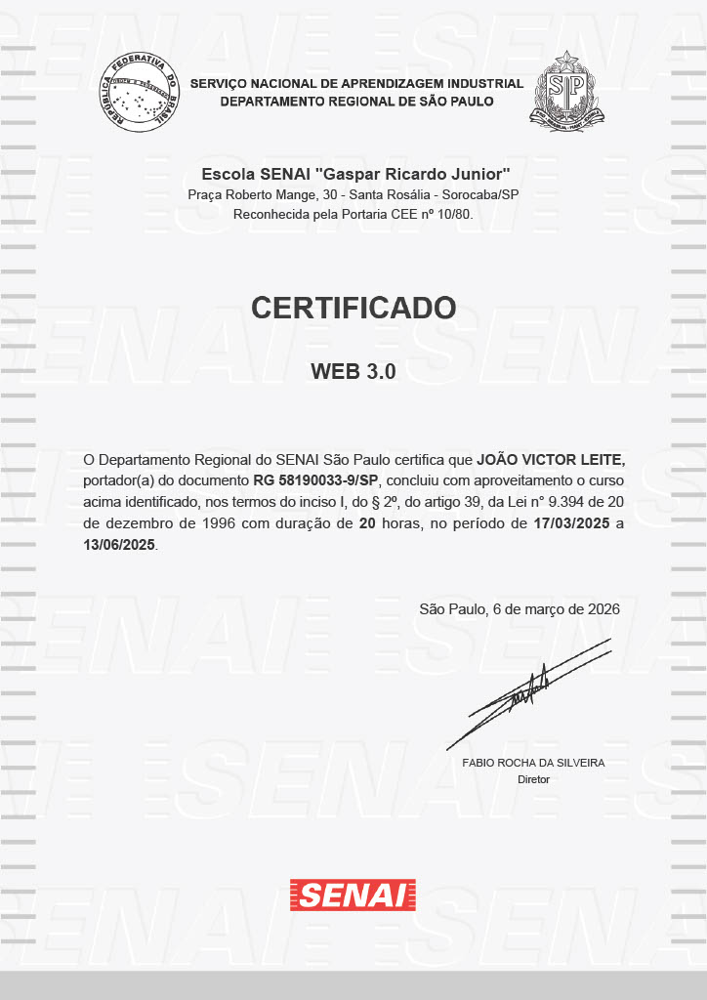

Analista e Desenvolvedor de Sistemas Full-Stack com enfase em Backend

Sou um desenvolvedor Front-End apaixonado por criar interfaces modernas, responsivas e intuitivas, focadas em
oferecer uma ótima experiência ao usuário. Tenho interesse em transformar ideias em aplicações web
funcionais, organizadas e visualmente agradáveis.
Atualmente estou aprofundando meus conhecimentos em React e TypeScript, buscando desenvolver aplicações mais
escaláveis, seguras e de fácil manutenção. Também estudo boas práticas de UX e UI, com o objetivo de criar
interfaces que não sejam apenas bonitas, mas também fáceis de usar e acessíveis.
Estou constantemente aprendendo novas tecnologias e aprimorando minhas habilidades para construir soluções
web eficientes, performáticas e alinhadas com as necessidades dos usuários e das empresas.
Atuo como estagiário de desenvolvimento no squad responsável pelo projeto Case, uma aplicação web full
stack voltada para gestão de usuários e autenticação.
Durante minha atuação, desenvolvo e mantenho funcionalidades utilizando:
- Back-end: C# com .NET
- Front-end: React com Next.js
- Banco de dados: PostgreSQL
- Arquitetura: APIs RESTful com autenticação e integração entre serviços
Tenho experiência na criação de sistemas completos, incluindo:
- Implementação de CRUD de usuários
- Desenvolvimento de sistema de autenticação (login)
- Integração entre front-end e back-end via API
- Consumo de endpoints protegidos
- Tratamento de erros e validações
- Versionamento de código com Git
- Como projeto prático, desenvolvi uma aplicação de cadastro de usuários, contemplando:
- Registro e login de usuários
- Redirecionamento após autenticação
- Consumo de API protegida (/user)
- Estruturação de rotas no front-end
- Integração com banco de dados PostgreSQL
Os certificados foram realizados durante o periodo que realizava o curso técnico em Análise e Desenvolvimento de Sistemas, diante disso eles são classificados como cursos tranversais, propondo diversos conceitos técnológicos essencias para a área.

WEB 3.0
Desvendando o 5G
Desvendando o ESG
Fundamentos da Inteligência Artificial
Desvendando a Indústria 4.0
Privacidade e Proteção de dados
Entre em contato comigo!